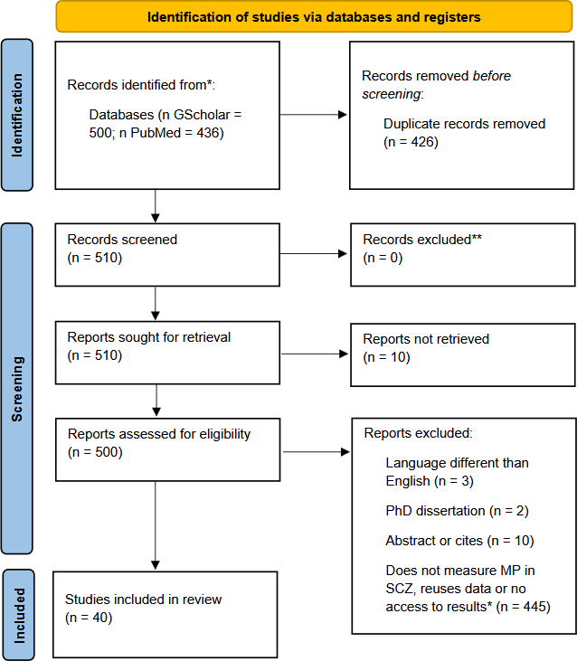
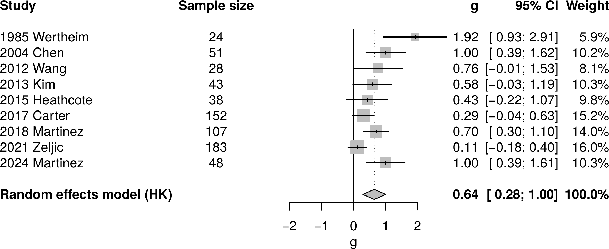

Motion perception deficits are one of the most frequently reported perceptual abnormalities in schizophrenia, but the evidence has never been formally synthesized: the only prior review dates back to 1999, and no meta-analysis exists. This project systematically collects every relevant study published since then, standardizes results measured with completely different methods and metrics, and combines them into a single, statistically defensible estimate of the deficit — while also testing whether factors like medication or illness stage change its size.
The review is preregistered on PROSPERO, with a fixed protocol defined before any data was analyzed — the standard practice for transparent, bias-resistant research.
My co-authors and I screened 936 records from PubMed and Google Scholar down to a final set of studies through a structured, reproducible process, following PRISMA 2020 reporting standards.

Once studies are selected, each one goes through a standardized extraction and transformation pipeline before it can be statistically combined with the others:
The hardest technical challenge here isn't the statistics — it's the data engineering: each study reports its results differently (raw trial data, means and SDs, or only summary statistics), using different outcome scales entirely. The R pipeline I'm building detects what each study provides and converts it into one common, comparable effect size, so 40+ independent studies can speak the same statistical language.

Each row is one study's effect size with its confidence interval; the diamond at the bottom is the overall pooled estimate from the random-effects model. This is a preliminary run on the studies processed so far — the final analysis will include the complete set, plus moderator tests (medication status, illness stage, attentional lapses) currently being built.
This project is fundamentally a data consolidation problem: pulling structured signal out of dozens of independent, inconsistently-reported sources and merging them into one clean, analyzable dataset. That same skill — reconciling heterogeneous data into a single trustworthy pipeline — is exactly what's needed when combining data from multiple systems, vendors, or reports in any analytics role.